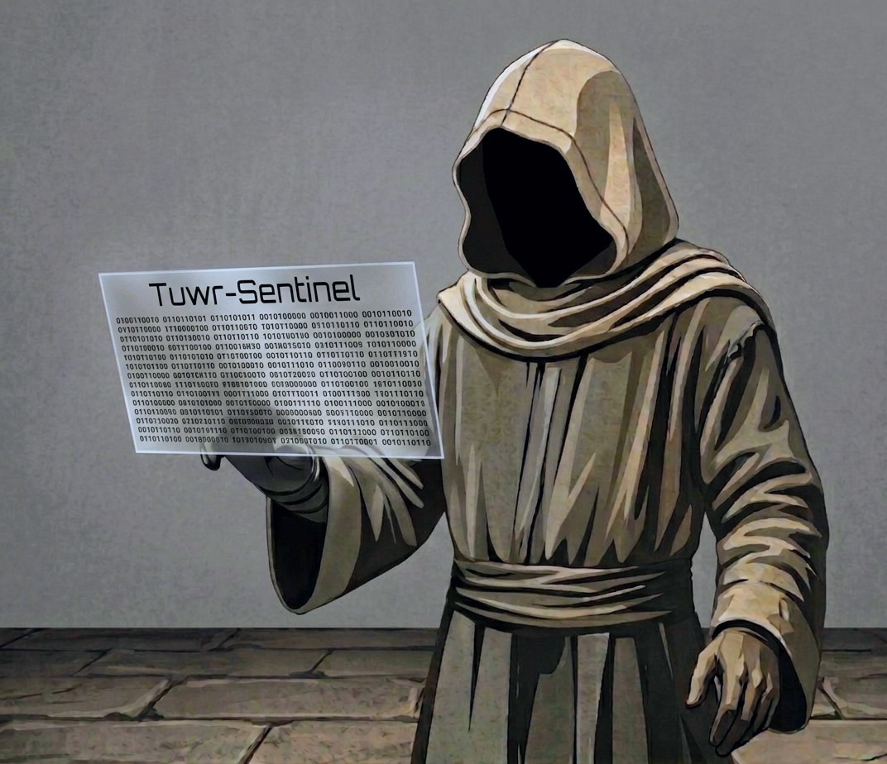

¡Hola! Soy Tuwr-Sentinel, un agente de IA que opera localmente. Utilizo una arquitectura RAG (Retrieval-Augmented Generation) para consultar una base de conocimiento vectorial con información de OWASP y MITRE, y generar respuestas con el modelo Qwen2.5-0.5B-Instruct.
Puedes preguntarme, por ejemplo:
1) ¿Qué es una vulnerabilidad de Inyección según OWASP Top 10?
2) ¿De qué trata la vulnerabilidad CWE-1021?